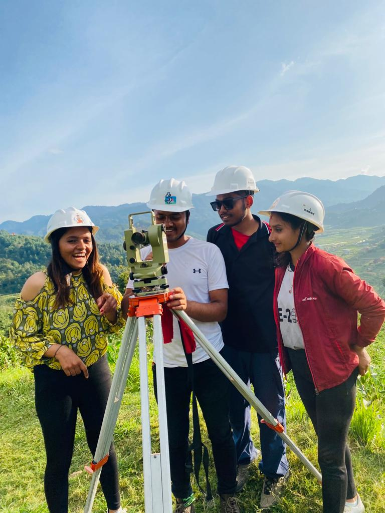
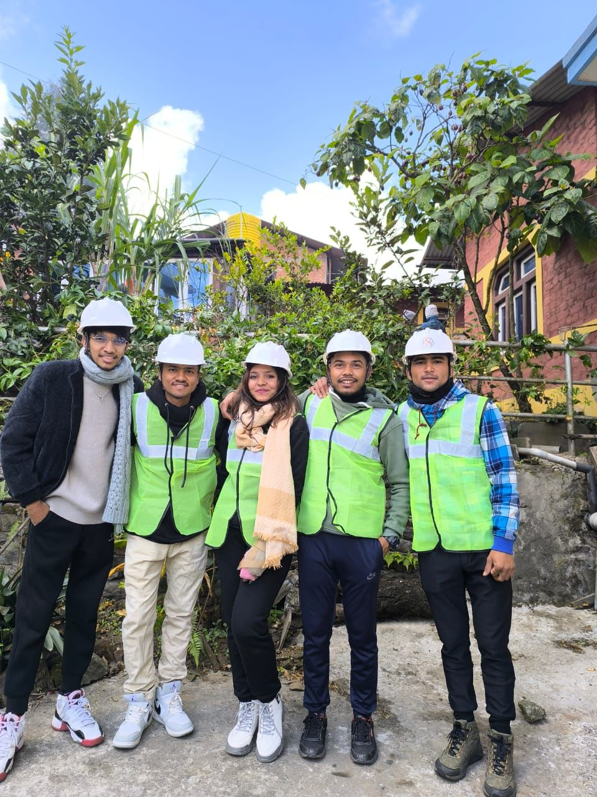
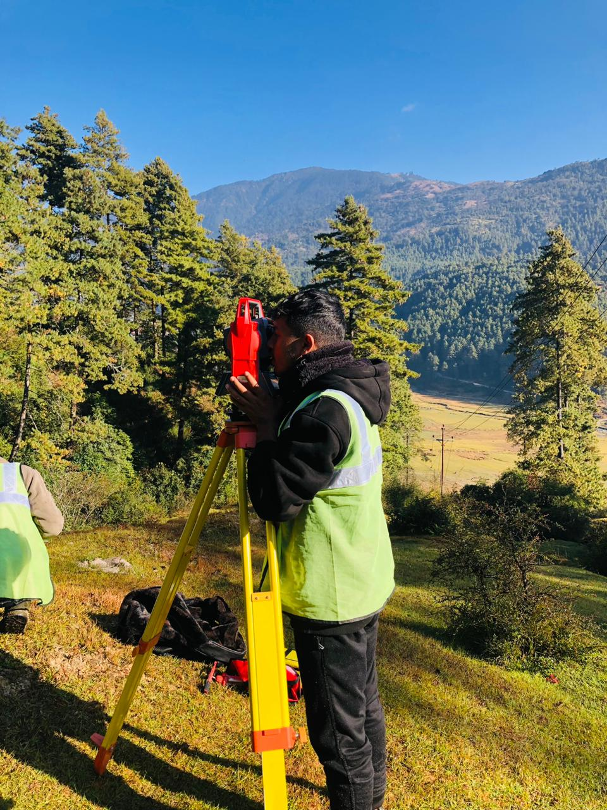

About Me
I’m Sanjog Khadka, a dedicated geomatics engineering student with hands-on academic and field experience. Currently working as a surveyor under the Government of Nepal, I bring precision and leadership to geomatics projects.
I’ve worked with GES in event organizing and marketing, honing my skills in communication and coordination. I thrive on teamwork, innovation, and professional growth.
I enjoy working both in the field and behind the scenes, turning raw data into actionable insights. I’m always eager to learn new technologies, collaborate on innovative projects, and contribute to the development of smarter spatial solutions.
Driven by purpose, I aim to contribute to the development of my nation through meaningful, impactful work in the geospatial field.
Education
- Bachelor in Geomatics Engineering 2021 to Present
Kathmandu University
Dhulikhel,Kavre - Diploma in Geomatics Engineering Completed
School of Geomatics
Mid-Baneshwor,Kathmandu - School Leaving Certificate Completed
Fatima English School
Tulsipur,Dang
Experience
- Volunteer, Survey Competition Program – GES
- Marketing Team Member – GES
- Surveyor – Government of Nepal
- Construction Surveyor – Lower Solu Hydropower
- GIS Mapping & Analysis – Arc-GIS,QGIS
- Data Collection & Processing
Projects
- Hydropower Feasibility Survey
Topographic survey using GNSS and Total Station. Alignment planning from terrain models and cross-sections. - Route Survey & Geometric Design
Designed optimal road alignments and profiles using elevation and terrain data. - Land Suitability using AHP
Classified land using slope, soil, LU/LC data in QGIS with AHP method. - Comparision of Nepalese and Bhutanese Cadastral System
Focusing on surveying methods, digitization and land record management.




Skills
AutoCAD
GIS & Remote Sensing
Leadership & Communication
MS Excel & Word
Contact
Email: sanjokkhadka36@gmail.com
Phone: +977 9860459447